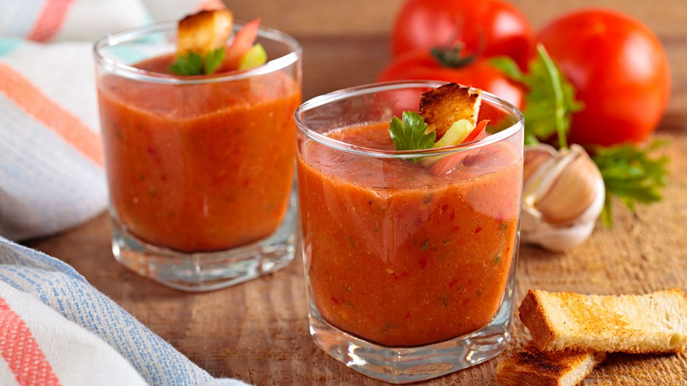

GAZPACHO ASALMOREJADO:RECETA

Aunque se aleje el verano y el calor, siempre es buen momento para
disfrutar de un fuerte y rico gazpacho.
- 8 tomates rojos
- 4 pepinos
- 1 cebolla entera
- 10 dientes de ajo
- 1 barra de pan seco
- Aceite de oliva
- Vinagre de vino
- Sal
- Pimienta negra
- Cominos
- Agua
Preparación
-
Cortamos todos los ingredientes (pelamos si necesario) en piezas no muy
pequeñas, para que la trituradora no tenga problema al funcionar.
- Los metemos en una trituradora/batidora
-
Lo procesamos, añadiendo agua, aceite y vinagre al gusto. El agua debe
cubrir los ingredientes antes de triturarlos.
-
Tras triturarlo hasta el punto de mantenerlo en una textura líquida,
añadimos los condimentos al gusto. Los ingredientes elegidos son para un
gazpacho con un sabor muy intenso
-
Añadimos la barra de pan, desmenuzada, y volvemos a triturar. La textura
final debería ser líquida, pero espesa.